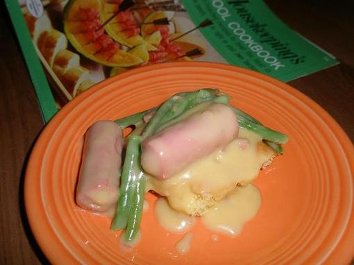

Jelly up your day with some Jellied chicken!

lets wiggle wiggle wiggle!
After a long day of work when you feel nothing but gluttony and loath,
this jellied chicken will fill your body with joy. You will wiggle
like jelly, jiggle like jelly, nibble at jelly and so much more. Hope
you have a jelicious day!
Things required:
- Fine cut chicken
- Celery soup cream
- Milk
- Swiss cheese
- Drained and snipped Sauerkraut
Steps:
So, you've seen the picture, you know the ingredients and still
you want to make this amazing recipe. Follow along!
- Take an iron pan and heat it on medium-high heat
- Add a cup of water, a pinch of salt and 10ml of your tears cause why are you still here?
- Mix the milk, swiss cheese and the Sauerkraut with pleas stop
- Grind some chicken with jello powder and add it in the pan
- After a hot minute, add the milk mixture to the pan and go see a therapist
Your jellied chicken is ready, ENJOY!
Homepage